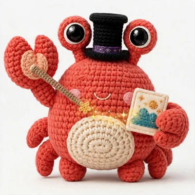

Supported formats
JPEG, PNG, WebP, GIF, AVIF, and JPEG XL, in and out. HEIC and HEIF decode only; SVG decodes, sanitized and rasterized. Name no format and the visitor's Accept header decides: AVIF first, then JPEG XL, then WebP. An explicit format(...) always wins. Sources are not just stills: frame: picks one frame of a video and page: picks one page of a PDF, and either becomes the image the URL works on.